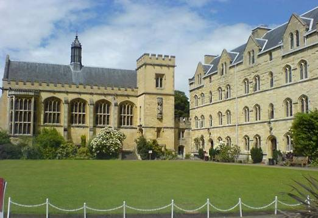

On 31 October 1728, aged 19, Johnson entered Pembroke College, Oxford, after inheriting money from the death of his mother’s cousin. The inheritance did not cover all of his expenses at Pembroke, but Andrew Corbet, a friend and fellow student at Pembroke, offered to make up the deficit. After thirteen months, a shortage of funds forced him to leave Oxford without a degree and he returned to Lichfield.